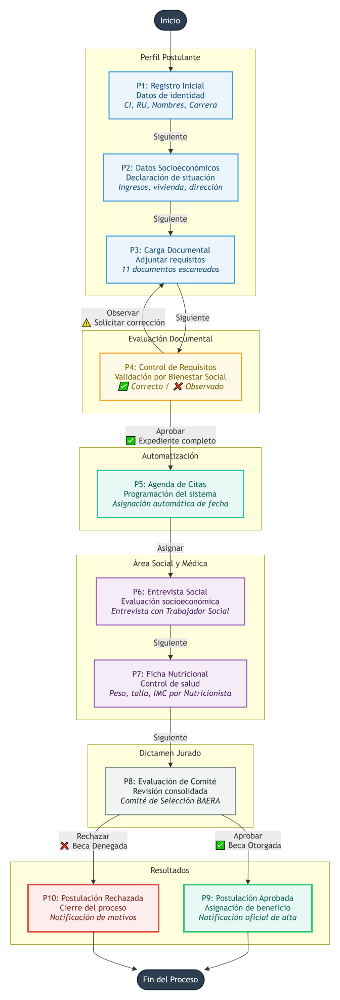

Proceso de solicitud y aprobacion de becas BAERA

Datos personales: CI, RU, nombres, carrera, facultad.
Direccion, ingresos familiares, tipo de vivienda, etc.
11 documentos requeridos (cedula, certificados, etc.)
Checklist por documento. Correcto o Observado (vuelve a P3).
Asignacion automatica de cita con trabajador social (+1 dia).
Evaluacion social y recomendacion.
Peso, talla, IMC, diagnostico nutricional.
Revisa informes consolidados y determina aprobacion o rechazo.
Notificacion al estudiante.
Notificacion al estudiante.